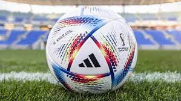

Al Rihla es el balón oficial de la Copa Mundial Catar 2022, que llega con el logo oficial de la Copa Mundial de la FIFA™, además de la certificación Certificación FIFA Quality Pro, que garantiza un juego perfecto. Se llama Al Rihla -que significa "el viaje"-, fue anunciada con la figura de Lionel Messi y está inspirada en "la cultura, la arquitectura, las emblemáticas embarcaciones y la bandera de Qatar". La primera aparición pública del Al Rihla llegará de la mano de leyendas como Iker Casillas, Kaká, Farah Jefry y Nouf Al Anzi, quienes estarán acompañados de un diverso grupo de jóvenes talentos tanto masculinos como femeninos. La presentación dará inicio al viaje de la pelota oficial del Mundial Qatar 2022 por diez ciudades de todo el mundo -entre ellas, Dubái, Tokio, Ciudad de México y Nueva York-, donde Adidas está llevando a cabo una serie de iniciativas destinadas a mejorar el acceso y la igualdad en el deporte entre las comunidades locales.
|  |